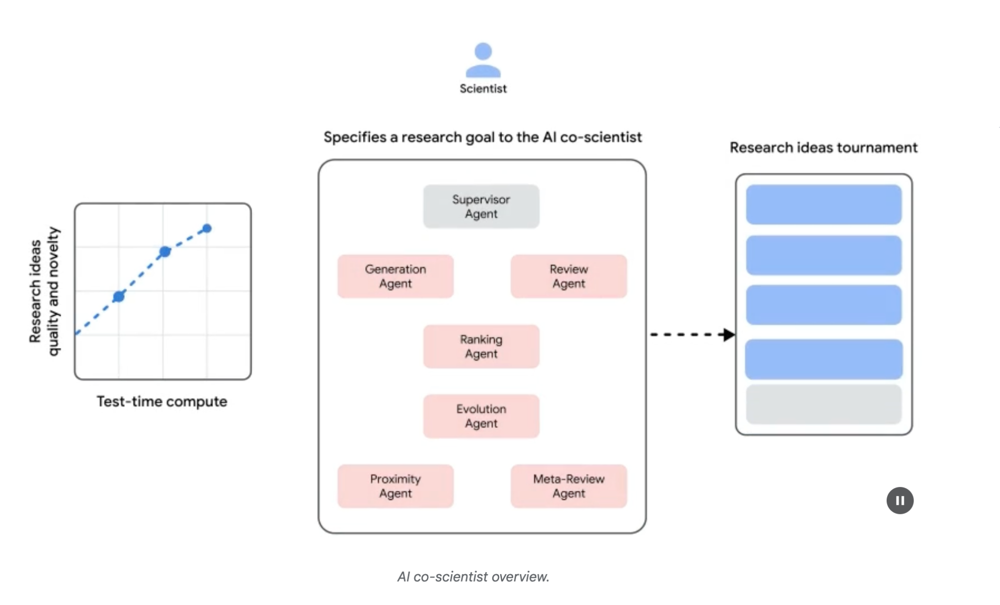
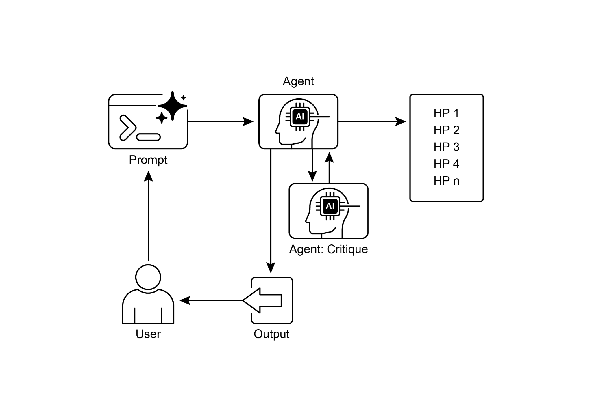

读书 · Agentic Design Patterns · 中英对照
第 21 章 · 探索与发现 Exploration and Discovery
Chapter 21: Exploration and Discovery · 《Agentic Design Patterns》 · Antonio Gulli · 2025
让智能体主动探索未知、生成新假设，而非只在预设空间内优化。
← 返回导读 原书 PDF 上一章:第20章 下一章:第100章
本章要点
① 探索与发现面向开放式、复杂、快速演化的领域，追求发现未知的未知。 ① 多智能体框架模拟科学方法：生成、评审、排序、演化假设。 ① Google Co-Scientist 与 Agent Laboratory 展示自主科研工作流。 ① 强调增强而非取代人类，需安全与伦理监督。
本章一图流
开放领域未知的未知，快速演化→多智能体模拟生成、评审、排序、演化假设→自主科研工作流Co-Scientist等展示→增强人类非取代，需安全伦理监督
智能体主动探索未知、生成新假设，而非在预设空间内优化。
原书插图


本章划线句
划线句(逐字校验)
"This chapter explores patterns that enable intelligent agents to actively seek out novel information, uncover new possibilities, and identify unknown unknowns within their operational environment."
为什么值得划线:点明本章核心：主动探索未知的未知。
划线句(逐字校验)
"The system follows an iterative "generate, debate, and evolve" approach mirroring the scientific method."
为什么值得划线:概括多智能体科研的核心循环。
划线句(逐字校验)
"In conclusion, the Exploration and Discovery pattern is the very essence of a truly agentic system, defining its ability to move beyond passive instruction-following to proactively explore its environment."
为什么值得划线:总结该模式是真正智能体性的本质。
正文(英中对照)
第21章：探索与发现 Chapter 21: Exploration and Discovery
"This chapter explores patterns that enable intelligent agents to actively seek out novel information, uncover new possibilities, and identify unknown unknowns within their operational environment. Exploration and discovery differ from reactive behaviors or optimization within a predefined solution space. Instead, they focus on agents proactively venturing into unfamiliar territories, experimenting with new approaches, and generating new knowledge or understanding. This pattern is crucial for agents operating in open-ended, complex, or rapidly evolving domains where static knowledge or pre-programmed solutions are insufficient. It emphasizes the agent's capacity to expand its understanding and capabilities."
本章探讨使智能体（intelligent agents）能够主动寻找新信息、发现新可能性并识别其操作环境中未知未知（unknown unknowns）的模式。探索与发现不同于反应性行为或在预定义解空间内的优化。相反，它们侧重于智能体主动进入不熟悉的领域、尝试新方法并生成新知识或理解。该模式对于在开放式、复杂或快速演变的领域中运行的智能体至关重要，在这些领域中，静态知识或预编程解决方案是不够的。它强调智能体扩展其理解和能力的能力。
导读注:探索与发现让智能体主动拓展认知边界，而非被动优化。
"Practical Applications & Use Cases AI agents possess the ability to intelligently prioritize and explore, which leads to applications across various domains. By autonomously evaluating and ordering potential actions, these agents can navigate complex environments, uncover hidden insights, and drive innovation. This capacity for prioritized exploration enables them to optimize processes, discover new knowledge, and generate content."
实际应用与用例 AI agent（智能体）具备智能地确定优先级并进行探索的能力，这使其应用遍及各个领域。通过自主评估并排序潜在行动，这些 agent 能够驾驭复杂环境、发掘隐藏洞见并推动创新。这种按优先级探索的能力使它们能够优化流程、发现新知识并生成内容。
导读注:点出 AI agent 的核心能力：自主评估并排序行动，由此衍生跨领域应用。
"Examples: ● Scientific Research Automation: An agent designs and runs experiments, analyzes results, and formulates new hypotheses to discover novel materials, drug candidates, or scientific principles. ● Game Playing and Strategy Generation: Agents explore game states, discovering emergent strategies or identifying vulnerabilities in game environments (e.g., AlphaGo). ● Market Research and Trend Spotting: Agents scan unstructured data (social media, news, reports) to identify trends, consumer behaviors, or market opportunities. ● Security Vulnerability Discovery: Agents probe systems or codebases to find security flaws or attack vectors. ● Creative Content Generation: Agents explore combinations of styles, themes, or data to generate artistic pieces, musical compositions, or literary works. ● Personalized Education and Training: AI tutors prioritize learning paths and content delivery based on a student's progress, learning style, and areas needing improvement. 1 Google Co-Scientist An AI co-scientist is an AI system developed by Google Research designed as a computational scientific collaborator."
示例：● 科学研究自动化：一个 agent（智能体）设计并运行实验、分析结果、提出新假设，以发现新材料、候选药物或科学原理。● 游戏博弈与策略生成：agent 探索游戏状态，发现涌现策略或识别游戏环境中的漏洞（例如 AlphaGo）。● 市场研究与趋势识别：agent 扫描非结构化数据（社交媒体、新闻、报告），以识别趋势、消费者行为或市场机会。● 安全漏洞发现：agent 探测系统或代码库，以发现安全缺陷或攻击向量。● 创意内容生成：agent 探索风格、主题或数据的组合，以生成艺术作品、音乐作品或文学作品。● 个性化教育与培训：AI 导师根据学生的进度、学习风格和需要改进的领域，优先安排学习路径和内容交付。1 Google Co-Scientist 一个 AI co-scientist（AI 联合科学家）是由 Google Research 开发的 AI 系统，被设计为计算型科学协作者。
导读注:列举 agent 的多种应用场景，并引出 Google Co-Scientist 这一 AI 科学协作者。
"It assists human scientists in research aspects such as hypothesis generation, proposal refinement, and experimental design. This system operates on the Gemini LLM.. The development of the AI co-scientist addresses challenges in scientific research. These include processing large volumes of information, generating testable hypotheses, and managing experimental planning. The AI co-scientist supports researchers by performing tasks that involve large-scale information processing and synthesis, potentially revealing relationships within data. Its purpose is to augment human cognitive processes by handling computationally demanding aspects of early-stage research."
它协助人类科学家开展假设生成、提案优化和实验设计等研究方面的工作。该系统基于 Gemini LLM 运行。AI 联合科学家（AI co-scientist）的开发旨在应对科学研究中的挑战，包括处理海量信息、生成可检验的假设以及管理实验规划。AI 联合科学家通过执行涉及大规模信息处理与综合的任务来支持研究人员，有可能揭示数据中的关联关系。其目的是通过处理早期研究中计算密集的方面来增强人类的认知过程。
导读注:介绍 AI co-scientist 基于 Gemini LLM 辅助科研，增强人类认知而非替代。
"System Architecture and Methodology: The architecture of the AI co-scientist is based on a multi-agent framework, structured to emulate collaborative and iterative processes. This design integrates specialized AI agents, each with a specific role in contributing to a research objective. A supervisor agent manages and coordinates the activities of these individual agents within an asynchronous task execution framework that allows for flexible scaling of computational resources."
系统架构与方法论：AI 联合科学家（AI co-scientist）的架构基于多智能体（multi-agent）框架，其结构旨在模拟协作式与迭代式过程。该设计集成了多个专门化的 AI 智能体，每个智能体在推动研究目标方面承担特定角色。一个监督智能体（supervisor agent）在异步任务执行框架内管理并协调这些个体智能体的活动，该框架允许计算资源的灵活扩展。
导读注:多智能体+异步调度是架构核心，监督智能体负责协调与弹性扩缩容。
"The core agents and their functions include (see Fig. 1): ● Generation agent: Initiates the process by producing initial hypotheses through literature exploration and simulated scientific debates. ● Reflection agent: Acts as a peer reviewer, critically assessing the correctness, novelty, and quality of the generated hypotheses. ● Ranking agent: Employs an Elo-based tournament to compare, rank, and prioritize hypotheses through simulated scientific debates. ● Evolution agent: Continuously refines top-ranked hypotheses by simplifying concepts, synthesizing ideas, and exploring unconventional reasoning. ● Proximity agent: Computes a proximity graph to cluster similar ideas and assist in exploring the hypothesis landscape. ● Meta-review agent: Synthesizes insights from all reviews and debates to identify common patterns and provide feedback, enabling the system to continuously improve."
核心智能体及其功能包括(见图1):● 生成智能体(Generation agent):通过文献探索和模拟科学辩论产生初始假设,启动整个流程。● 反思智能体(Reflection agent):充当同行评审者,批判性评估所生成假设的正确性、新颖性和质量。● 排序智能体(Ranking agent):采用基于 Elo 的锦标赛机制,通过模拟科学辩论对假设进行比较、排序和优先级划分。● 进化智能体(Evolution agent):通过简化概念、综合想法和探索非常规推理,持续改进排名靠前的假设。● 邻近智能体(Proximity agent):计算邻近图以对相似想法进行聚类,并协助探索假设空间。● 元评审智能体(Meta-review agent):综合所有评审和辩论中的洞见,识别常见模式并提供反馈,使系统能够持续改进。
导读注:六类智能体分工协作,反思与元评审构成质量闭环,是系统自我改进的关键。
"The system's operational foundation relies on Gemini, which provides language understanding, reasoning, and generative abilities. The system incorporates 2 "test-time compute scaling," a mechanism that allocates increased computational resources to iteratively reason and enhance outputs. The system processes and synthesizes information from diverse sources, including academic literature, web-based data, and databases. Fig. 1: (Courtesy of the Authors) AI Co-Scientist: Ideation to Validation The system follows an iterative "generate, debate, and evolve" approach mirroring the scientific method."
该系统的运行基础依赖 Gemini，由其提供语言理解、推理和生成能力。系统引入了 2 项“测试时计算扩展”（test-time compute scaling）机制，该机制分配更多计算资源以迭代推理并增强输出。系统处理并综合来自多种来源的信息，包括学术文献、网络数据和数据库。图 1：（作者提供）AI 联合科学家（AI Co-Scientist）：从构思到验证 该系统遵循迭代式的“生成、辩论、演化”方法，模拟科学方法。
导读注:点出系统以 Gemini 为底座，靠测试时计算扩展迭代推理，并模拟科学方法。
"Following the input of a scientific problem from a human scientist, the system engages in a self-improving cycle of hypothesis generation, evaluation, and refinement. Hypotheses undergo systematic assessment, including internal evaluations among agents and a tournament-based ranking mechanism. Validation and Results: The AI co-scientist's utility has been demonstrated in several validation studies, particularly in biomedicine, assessing its performance through automated benchmarks, expert reviews, and end-to-end wet-lab experiments."
在人类科学家输入一个科学问题后，系统会进入一个自我改进循环，依次进行假设生成、评估和精炼。假设会接受系统性评估，包括智能体之间的内部评估以及基于锦标赛的排名机制。验证与结果：AI 联合科学家（AI co-scientist）的效用已在多项验证研究中得到证明，尤其是在生物医学领域，通过自动化基准测试、专家评审和端到端湿实验（wet-lab experiments）来评估其性能。
导读注:展示AI联合科学家如何通过自我改进循环与锦标赛排名生成并筛选假设。
"Automated and Expert Evaluation: On the challenging GPQA benchmark, the system's internal Elo rating was shown to be concordant with the accuracy of its results, achieving a top-1 accuracy of 78.4% on the difficult "diamond set". Analysis across over 200 research goals demonstrated that scaling test-time compute consistently improves the quality of hypotheses, as measured by the Elo rating. On a curated set of 15 challenging problems, the AI co-scientist outperformed other state-of-the-art AI models and the "best guess" solutions provided by human experts. In a small-scale evaluation, biomedical experts rated the co-scientist's outputs as 3 more novel and impactful compared to other baseline models."
自动与专家评估：在具有挑战性的 GPQA 基准上，该系统的内部 Elo 评分被证明与其结果的准确率一致，在困难的“diamond set”上达到 78.4% 的 top-1 准确率。对 200 多个研究目标的分析表明，扩展测试时计算（test-time compute）能持续提升假设质量，以 Elo 评分衡量。在一组精选的 15 个挑战性问题中，AI co-scientist（AI 联合科学家）优于其他最先进的 AI 模型以及人类专家提供的“最佳猜测”解决方案。在一项小规模评估中，生物医学专家将该 co-scientist 的输出评为比其他基线模型新颖性和影响力高 3 分。
导读注:扩展测试时计算可稳定提升假设质量，且系统在难题上超越人类专家猜测。
"The system's proposals for drug repurposing, formatted as NIH Specific Aims pages, were also judged to be of high quality by a panel of six expert oncologists. End-to-End Experimental Validation: Drug Repurposing: For acute myeloid leukemia (AML), the system proposed novel drug candidates. Some of these, like KIRA6, were completely novel suggestions with no prior preclinical evidence for use in AML. Subsequent in vitro experiments confirmed that KIRA6 and other suggested drugs inhibited tumor cell viability at clinically relevant concentrations in multiple AML cell lines. Novel Target Discovery: The system identified novel epigenetic targets for liver fibrosis."
该系统提出的药物重定位(drug repurposing)方案以 NIH Specific Aims 页面格式呈现,也被由六位肿瘤学专家组成的评审小组评定为高质量。端到端实验验证:药物重定位:针对急性髓系白血病(acute myeloid leukemia, AML),该系统提出了新的候选药物。其中一些,如 KIRA6,是完全新颖的建议,此前没有用于 AML 的临床前证据。后续体外实验证实,KIRA6 及其他建议药物在多个 AML 细胞系中于临床相关浓度下抑制了肿瘤细胞活力。新靶点发现:该系统识别出了肝纤维化的新表观遗传靶点。
导读注:AI 提出的药物重定位方案获专家认可,并经体外实验验证,值得关注。
"Laboratory experiments using human hepatic organoids validated these findings, showing that drugs targeting the suggested epigenetic modifiers had significant anti-fibrotic activity. One of the identified drugs is already FDA-approved for another condition, opening an opportunity for repurposing. Antimicrobial Resistance: The AI co-scientist independently recapitulated unpublished experimental findings. It was tasked to explain why certain mobile genetic elements (cf-PICIs) are found across many bacterial species. In two days, the system's top-ranked hypothesis was that cf-PICIs interact with diverse phage tails to expand their host range."
使用人类肝脏类器官（hepatic organoids）的实验室实验验证了这些发现，表明靶向所提示的表观遗传修饰因子的药物具有显著的抗纤维化活性。其中一种被识别的药物已获 FDA 批准用于另一种适应症，为药物重定位（repurposing）提供了机会。抗菌耐药性（Antimicrobial Resistance）：AI 联合科学家（co-scientist）独立重现了未发表的实验结果。它被要求解释为何某些可移动遗传元件（mobile genetic elements，cf-PICIs）存在于许多细菌物种中。在两天内，该系统排名最高的假设是 cf-PICIs 与多种噬菌体尾部（phage tails）相互作用以扩大其宿主范围。
导读注:AI 联合科学家两天内独立重现未发表发现，药物重定位机会值得关注。
"This mirrored the novel, experimentally validated discovery that an independent research group had reached after more than a decade of research. Augmentation, and Limitations: The design philosophy behind the AI co-scientist emphasizes augmentation rather than complete automation of human research. Researchers interact with and guide the system through natural language, providing feedback, contributing their own ideas, and directing the AI's exploratory processes in a "scientist-in-the-loop" collaborative paradigm. However, the system has some limitations. Its knowledge is constrained by its reliance on open-access literature, potentially missing critical prior work behind paywalls."
这与一个独立研究小组经过十多年研究后得出的、经实验验证的新发现相呼应。增强与局限：AI 共同科学家（AI co-scientist）背后的设计理念强调增强而非完全自动化人类研究。研究人员通过自然语言与系统交互并引导它，提供反馈、贡献自己的想法，并在「科学家在环」（scientist-in-the-loop）的协作范式中指导 AI 的探索过程。然而，该系统存在一些局限。它的知识受限于对开放获取文献的依赖，可能遗漏付费墙后的关键先前工作。
导读注:点出 AI 共同科学家的核心定位是增强而非替代研究者，并提示开放获取文献依赖带来的知识盲区。
"It also has limited access to negative experimental results, which are rarely published but crucial for experienced scientists. Furthermore, the system inherits limitations from the underlying LLMs, including the potential for factual inaccuracies or "hallucinations". Safety: Safety is a critical consideration, and the system incorporates multiple safeguards. All research goals are reviewed for safety upon input, and generated hypotheses are also checked to prevent the system from being used for unsafe or unethical research. A preliminary safety evaluation using 1,200 adversarial research 4 goals found that the system could robustly reject dangerous inputs."
它获取负面实验结果的能力也有限，这类结果很少发表，但对经验丰富的科学家至关重要。此外，该系统继承了底层 LLM 的局限性，包括可能出现事实性错误或"幻觉"。安全性：安全性是一项关键考量，系统内置了多重防护措施。所有研究目标在输入时都会接受安全审查，生成的假设也会被检查，以防止系统被用于不安全或不道德的研究。使用 1,200 个对抗性研究目标进行的初步安全评估发现，该系统能够稳健地拒绝危险输入。
导读注:点出系统继承 LLM 幻觉风险，但多重安全防护可稳健拒绝危险输入。
"To ensure responsible development, the system is being made available to more scientists through a Trusted Tester Program to gather real-world feedback. Hands-On Code Example Let's look at a concrete example of agentic AI for Exploration and Discovery in action: Agent Laboratory, a project developed by Samuel Schmidgall under the MIT License. "Agent Laboratory" is an autonomous research workflow framework designed to augment human scientific endeavors rather than replace them. This system leverages specialized LLMs to automate various stages of the scientific research process, thereby enabling human researchers to dedicate more cognitive resources to conceptualization and critical analysis."
为确保负责任的开发，该系统正通过可信测试者计划（Trusted Tester Program）向更多科学家开放，以收集真实世界的反馈。动手代码示例 让我们看一个用于探索与发现的 agentic AI 的具体实例：Agent Laboratory，这是 Samuel Schmidgall 在 MIT 许可证下开发的项目。"Agent Laboratory" 是一个自主研究工作流框架，旨在增强而非取代人类的科学工作。该系统利用专门的 LLM 自动化科学研究过程的各个阶段，从而使人类研究人员能够将更多认知资源投入到概念化和批判性分析中。
导读注:介绍 Agent Laboratory 如何用 LLM 自动化科研流程，强调增强而非取代人类研究者。
"The framework integrates "AgentRxiv," a decentralized repository for autonomous research agents. AgentRxiv facilitates the deposition, retrieval, and development of research outputs Agent Laboratory guides the research process through distinct phases: 1. Literature Review: During this initial phase, specialized LLM-driven agents are tasked with the autonomous collection and critical analysis of pertinent scholarly literature. This involves leveraging external databases such as arXiv to identify, synthesize, and categorize relevant research, effectively establishing a comprehensive knowledge base for the subsequent stages. 2."
该框架集成了“AgentRxiv”，一个面向自主研究代理的去中心化存储库。AgentRxiv 便于研究成果的提交、检索与开发。Agent Laboratory 通过不同阶段引导研究过程：1. 文献综述：在此初始阶段，由 LLM 驱动的专业代理负责自主收集和批判性分析相关学术文献。这涉及利用 arXiv 等外部数据库来识别、综合和分类相关研究，从而有效为后续阶段建立全面的知识库。2.
导读注:介绍 AgentRxiv 与 Agent Laboratory 的文献综述阶段，去中心化存储库与 LLM 代理协作是亮点。
"Experimentation: This phase encompasses the collaborative formulation of experimental designs, data preparation, execution of experiments, and analysis of results. Agents utilize integrated tools like Python for code generation and execution, and Hugging Face for model access, to conduct automated experimentation. The system is designed for iterative refinement, where agents can adapt and optimize experimental procedures based on real-time outcomes. 3. Report Writing: In the final phase, the system automates the generation of comprehensive research reports."
实验：该阶段涵盖实验设计的协作制定、数据准备、实验执行和结果分析。智能体利用 Python（用于代码生成与执行）和 Hugging Face（用于模型访问）等集成工具开展自动化实验。系统面向迭代优化设计，智能体可根据实时结果调整并优化实验流程。3. 报告撰写：在最后阶段，系统自动生成完整的研究报告。
导读注:强调迭代优化：智能体依据实时结果动态调整实验流程。
"This involves synthesizing findings from the experimentation phase with insights from the literature review, structuring the document according to academic conventions, and integrating external tools like LaTeX for professional formatting and figure generation. 4. Knowledge Sharing: AgentRxiv is a platform enabling autonomous research agents to share, access, and collaboratively advance scientific discoveries. It 5 allows agents to build upon previous findings, fostering cumulative research progress. The modular architecture of Agent Laboratory ensures computational flexibility. The aim is to enhance research productivity by automating tasks while maintaining the human researcher."
这涉及将实验阶段的发现与文献综述的洞见进行综合，按照学术规范组织文档，并集成 LaTeX 等外部工具以实现专业排版和图表生成。4. 知识共享（Knowledge Sharing）：AgentRxiv 是一个平台，使自主研究智能体（autonomous research agents）能够分享、获取并协作推进科学发现。它允许智能体在先前发现的基础上继续构建，从而促进累积性研究进展。Agent Laboratory 的模块化架构确保了计算灵活性。其目标是通过自动化任务来提升研究生产力，同时保留人类研究者。
导读注:介绍 Agent Laboratory 的文档综合与知识共享机制，AgentRxiv 支持智能体协作累积研究。
"Code analysis: While a comprehensive code analysis is beyond the scope of this book, I want to provide you with some key insights and encourage you to delve into the code on your own. Judgment: In order to emulate human evaluative processes, the system employs a tripartite agentic judgment mechanism for assessing outputs. This involves the deployment of three distinct autonomous agents, each configured to evaluate the production from a specific perspective, thereby collectively mimicking the nuanced and multi-faceted nature of human judgment. This approach allows for a more robust and comprehensive appraisal, moving beyond singular metrics to capture a richer qualitative assessment."
代码分析：虽然全面的代码分析超出了本书的范围，但我想为你提供一些关键见解，并鼓励你自己深入研究代码。判断：为了模拟人类的评估过程，系统采用了一种三方代理判断机制来评估输出。这涉及部署三个不同的自主代理（agent），每个代理都被配置为从特定视角评估产出，从而共同模拟人类判断的细微和多面性。这种方法允许进行更稳健和全面的评估，超越单一指标，捕捉更丰富的定性评估。
导读注:揭示系统用三个自主代理从不同视角模拟人类多面判断。
python
class ReviewersAgent:
def __init__(self, model="gpt-4o-mini", notes=None,
openai_api_key=None):
if notes is None: self.notes = []
else: self.notes = notes
self.model = model
self.openai_api_key = openai_api_keypython
def inference(self, plan, report):
reviewer_1 = "You are a harsh but fair reviewer and expect
good experiments that lead to insights for the research topic."
review_1 = get_score(outlined_plan=plan, latex=report,
reward_model_llm=self.model, reviewer_type=reviewer_1,
openai_api_key=self.openai_api_key)"reviewer_2 = "You are a harsh and critical but fair reviewer who is looking for an idea that would be impactful in the field." review_2 = get_score(outlined_plan=plan, latex=report, reward_model_llm=self.model, reviewer_type=reviewer_2, openai_api_key=self.openai_api_key) reviewer_3 = "You are a harsh but fair open-minded reviewer that is looking for novel ideas that have not been proposed before." review_3 = get_score(outlined_plan=plan, latex=report, reward_model_llm=self.model, reviewer_type=reviewer_3, 6 openai_api_key=self.openai_api_key)"
reviewer_2 = "你是一位严厉、挑剔但公正的审稿人，正在寻找一个在该领域有影响力的想法。" review_2 = get_score(outlined_plan=plan, latex=report, reward_model_llm=self.model, reviewer_type=reviewer_2, openai_api_key=self.openai_api_key) reviewer_3 = "你是一位严厉但公正、思想开放的审稿人，正在寻找此前未曾提出的新颖想法。" review_3 = get_score(outlined_plan=plan, latex=report, reward_model_llm=self.model, reviewer_type=reviewer_3, 6 openai_api_key=self.openai_api_key)
导读注:展示用不同审稿人 prompt 对同一方案打分，评审视角可配置。
text
return f"Reviewer #1:\n{review_1}, \nReviewer #2:\n{review_2},
\nReviewer #3:\n{review_3}""The judgment agents are designed with a specific prompt that closely emulates the cognitive framework and evaluation criteria typically employed by human reviewers. This prompt guides the agents to analyze outputs through a lens similar to how a human expert would, considering factors like relevance, coherence, factual accuracy, and overall quality. By crafting these prompts to mirror human review protocols, the system aims to achieve a level of evaluative sophistication that approaches human-like discernment."
判断代理（judgment agents）通过一个特定的 prompt 设计，该 prompt 紧密模拟人类评审者通常采用的认知框架和评估标准。这个 prompt 引导代理以类似人类专家的视角分析输出，考虑相关性、连贯性、事实准确性和整体质量等因素。通过精心设计这些 prompt 以镜像人类评审协议，系统旨在达到一种接近人类辨别力的评估精细度。
导读注:prompt 模拟人类评审认知框架，是提升评估精细度的关键设计。
python
def get_score(outlined_plan, latex, reward_model_llm,
reviewer_type=None, attempts=3, openai_api_key=None):
e = str()
for _attempt in range(attempts):
try:"template_instructions = """ Respond in the following format: THOUGHT: <THOUGHT> REVIEW JSON: ```json <JSON> ``` In <THOUGHT>, first briefly discuss your intuitions and reasoning for the evaluation. Detail your high-level arguments, necessary choices and desired outcomes of the review. Do not make generic comments here, but be specific to your current paper. Treat this as the note-taking phase of your review. In <JSON>, provide the review in JSON format with the following fields in the order: - "Summary": A summary of the paper content and its contributions. - "Strengths": A list of strengths of the paper. 7"
template_instructions = """ 按以下格式回复：THOUGHT: <THOUGHT> REVIEW JSON: ```json <JSON> ``` 在 <THOUGHT> 中，先简要讨论你进行评估的直觉与推理。详述你的高层次论点、必要选择以及评审的预期结果。此处不要做泛泛的评论，而要针对你当前评审的论文具体展开。把这当作评审的记录阶段。在 <JSON> 中，按以下顺序以 JSON 格式提供评审，字段包括：- "Summary"：论文内容及其贡献的摘要。- "Strengths"：论文优点的列表。7
导读注:展示评审模板的结构化输出格式：先思考后 JSON，字段顺序固定。
text
- "Weaknesses": A list of weaknesses of the paper.
- "Originality": A rating from 1 to 4
(low, medium, high, very high).
- "Quality": A rating from 1 to 4
(low, medium, high, very high).
- "Clarity": A rating from 1 to 4
(low, medium, high, very high).
- "Significance": A rating from 1 to 4
(low, medium, high, very high).
- "Questions": A set of clarifying questions to be
answered by the paper authors.
- "Limitations": A set of limitations and potential
negative societal impacts of the work.
- "Ethical Concerns": A boolean value indicating
whether there are ethical concerns.
- "Soundness": A rating from 1 to 4
(poor, fair, good, excellent).
- "Presentation": A rating from 1 to 4
(poor, fair, good, excellent).
- "Contribution": A rating from 1 to 4
(poor, fair, good, excellent).
- "Overall": A rating from 1 to 10
(very strong reject to award quality).
- "Confidence": A rating from 1 to 5
(low, medium, high, very high, absolute).
- "Decision": A decision that has to be one of the
following: Accept, Reject."For the "Decision" field, don't use Weak Accept, Borderline Accept, Borderline Reject, or Strong Reject. Instead, only use Accept or Reject. This JSON will be automatically parsed, so ensure the format is precise. """ In this multi-agent system, the research process is structured around specialized roles, mirroring a typical academic hierarchy to streamline workflow and optimize output. Professor Agent: The Professor Agent functions as the primary research director, responsible for establishing the research agenda, defining research questions, and delegating tasks to other agents. This agent sets the strategic direction and ensures alignment with project objectives. 8"
对于“Decision”字段，不要使用 Weak Accept、Borderline Accept、Borderline Reject 或 Strong Reject。相反，只使用 Accept 或 Reject。此 JSON 将被自动解析，因此请确保格式精确。""" 在这个多智能体系统（multi-agent system）中，研究过程围绕专门角色构建，模仿典型的学术层级以简化工作流程并优化输出。教授智能体（Professor Agent）：教授智能体作为主要研究主管，负责制定研究议程、定义研究问题，并将任务委派给其他智能体。该智能体设定战略方向并确保与项目目标保持一致。8
导读注:强调 Decision 字段仅用 Accept/Reject，并介绍教授智能体的统筹角色。
python
class ProfessorAgent(BaseAgent):
def __init__(self, model="gpt4omini", notes=None, max_steps=100,
openai_api_key=None):
super().__init__(model, notes, max_steps, openai_api_key)
self.phases = ["report writing"]python
def generate_readme(self):
sys_prompt = f"""You are {self.role_description()} \n Here is
the written paper \n{self.report}. Task instructions: Your goal is to
integrate all of the knowledge, code, reports, and notes provided to
you and generate a readme.md for a github repository."""
history_str = "\n".join([_[1] for _ in self.history])
prompt = (
f"""History: {history_str}\n{'~' * 10}\n"""
f"Please produce the readme below in markdown:\n")
model_resp = query_model(model_str=self.model,
system_prompt=sys_prompt, prompt=prompt,
openai_api_key=self.openai_api_key)
return model_resp.replace("```markdown", "")"PostDoc Agent: The PostDoc Agent's role is to execute the research. This includes conducting literature reviews, designing and implementing experiments, and generating research outputs such as papers. Importantly, the PostDoc Agent has the capability to write and execute code, enabling the practical implementation of experimental protocols and data analysis. This agent is the primary producer of research artifacts."
PostDoc Agent（博士后智能体）：PostDoc Agent 的职责是执行研究。这包括开展文献综述、设计并实施实验，以及产出论文等研究成果。重要的是，PostDoc Agent 具备编写和执行代码的能力，从而能够实际实施实验方案并开展数据分析。该智能体是研究制品的主要生产者。
导读注:点出该智能体能写代码、跑实验，是研究产出的主力。
python
class PostdocAgent(BaseAgent):
def __init__(self, model="gpt4omini", notes=None, max_steps=100,
openai_api_key=None):
super().__init__(model, notes, max_steps, openai_api_key)
self.phases = ["plan formulation", "results interpretation"]"def context(self, phase): sr_str = str() if self.second_round: sr_str = ( f"The following are results from the previous experiments\n", f"Previous Experiment code: {self.prev_results_code}\n" 9"
def context(self, phase): sr_str = str() 如果 self.second_round 为真，则 sr_str = ( f"以下是先前实验的结果\n", f"先前实验代码：{self.prev_results_code}\n" 9
导读注:代码片段展示第二轮实验上下文构建，注意末尾数字9疑似笔误。
python
f"Previous Results: {self.prev_exp_results}\n"
f"Previous Interpretation of results:
{self.prev_interpretation}\n"
f"Previous Report: {self.prev_report}\n"
f"{self.reviewer_response}\n\n\n"
)
if phase == "plan formulation":
return (
sr_str,
f"Current Literature Review: {self.lit_review_sum}",
)
elif phase == "results interpretation":
return (
sr_str,
f"Current Literature Review: {self.lit_review_sum}\n"
f"Current Plan: {self.plan}\n"
f"Current Dataset code: {self.dataset_code}\n"
f"Current Experiment code: {self.results_code}\n"
f"Current Results: {self.exp_results}"
)
return """Reviewer Agents: Reviewer agents perform critical evaluations of research outputs from the PostDoc Agent, assessing the quality, validity, and scientific rigor of papers and experimental results. This evaluation phase emulates the peer-review process in academic settings to ensure a high standard of research output before finalization. ML Engineering Agents:The Machine Learning Engineering Agents serve as machine learning engineers, engaging in dialogic collaboration with a PhD student to develop code. Their central function is to generate uncomplicated code for data preprocessing, integrating insights derived from the provided literature review and experimental protocol."
审稿人智能体（Reviewer Agents）：审稿人智能体对博士后智能体（PostDoc Agent）的研究成果进行批判性评估，评价论文与实验结果的质量、有效性及科学严谨性。该评估阶段模拟学术环境中的同行评审过程，以确保研究产出在定稿前达到高标准。机器学习工程智能体（ML Engineering Agents）：机器学习工程智能体充当机器学习工程师，与博士生进行对话式协作以开发代码。其核心职能是生成简洁的数据预处理代码，并整合从所提供的文献综述与实验方案中获得的洞见。
导读注:介绍两类智能体分工：审稿人智能体模拟同行评审，ML工程智能体协作写代码。
"This guarantees that the data is appropriately formatted and prepared for the designated experiment. "You are a machine learning engineer being directed by a PhD student who will help you write the code, and you can interact with them through dialogue.\n" "Your goal is to produce code that prepares the data for the provided experiment. You should aim for simple code to prepare the data, not complex code. You should integrate the provided literature review and the plan and come up with code to prepare data for this experiment.\n" 10 SWEngineerAgents: Software Engineering Agents guide Machine Learning Engineer Agents."
这保证了数据被适当地格式化并为指定的实验做好准备。"你是一名机器学习工程师，由一位博士生指导，他将帮助你编写代码，你可以通过对话与他们互动。\n" "你的目标是生成为所提供实验准备数据的代码。你应该力求用简单的代码来准备数据，而不是复杂的代码。你应该整合所提供的文献综述和计划，并提出为这个实验准备数据的代码。\n" 10 SWEngineerAgents：软件工程代理（Software Engineering Agents）指导机器学习工程师代理（Machine Learning Engineer Agents）。
导读注:SWEngineerAgents 指导 ML 工程师代理，强调用简单代码准备数据。
"Their main purpose is to assist the Machine Learning Engineer Agent in creating straightforward data preparation code for a specific experiment. The Software Engineer Agent integrates the provided literature review and experimental plan, ensuring the generated code is uncomplicated and directly relevant to the research objectives. "You are a software engineer directing a machine learning engineer, where the machine learning engineer will be writing the code, and you can interact with them through dialogue.\n" "Your goal is to help the ML engineer produce code that prepares the data for the provided experiment. You should aim for very simple code to prepare the data, not complex code."
它们的主要目的是协助机器学习工程师智能体(Machine Learning Engineer Agent)为特定实验编写简洁的数据准备代码。软件工程师智能体(Software Engineer Agent)整合所提供的文献综述与实验计划,确保生成的代码不复杂且与研究目标直接相关。"你是一名软件工程师,指导一名机器学习工程师,机器学习工程师将编写代码,你可以通过对话与其交互。\n" "你的目标是帮助 ML 工程师生成为所提供实验准备数据的代码。你应当力求用非常简单的代码来准备数据,而非复杂的代码。
导读注:强调智能体分工:软件工程师只指导,数据准备代码务必简单。
"You should integrate the provided literature review and the plan and come up with code to prepare data for this experiment.\n" In summary, "Agent Laboratory" represents a sophisticated framework for autonomous scientific research. It is designed to augment human research capabilities by automating key research stages and facilitating collaborative AI-driven knowledge generation. The system aims to increase research efficiency by managing routine tasks while maintaining human oversight. At a Glance What: AI agents often operate within predefined knowledge, limiting their ability to tackle novel situations or open-ended problems."
你应当整合所提供的文献综述与计划，并提出用于为本次实验准备数据的代码。
" 总之，"Agent Laboratory"（智能体实验室）代表了一个用于自主科学研究的精密框架。它旨在通过自动化关键研究阶段并促进协作式 AI 驱动的知识生成，来增强人类的研究能力。该系统旨在通过管理常规任务同时保持人类监督来提高研究效率。概览 是什么：AI 智能体（AI agents）通常在预定义知识范围内运作，限制了其应对新情境或开放式问题的能力。
导读注:强调整合文献与计划生成数据准备代码，并点出 Agent Laboratory 的定位与 AI 智能体的知识局限。
"In complex and dynamic environments, this static, pre-programmed information is insufficient for true innovation or discovery. The fundamental challenge is to enable agents to move beyond simple optimization to actively seek out new information and identify "unknown unknowns." This necessitates a paradigm shift from purely reactive behaviors to proactive, Agentic exploration that expands the system's own understanding and capabilities. Why: The standardized solution is to build Agentic AI systems specifically designed for autonomous exploration and discovery. These systems often utilize a multi-agent framework where specialized LLMs collaborate to emulate processes like the scientific method."
在复杂且动态的环境中，这种静态的、预先编程的信息不足以实现真正的创新或发现。根本挑战在于让智能体超越简单的优化，主动寻找新信息并识别“未知的未知”。这需要从纯粹的反应式行为转向主动的、智能体式（Agentic）探索，以扩展系统自身的理解与能力。为什么：标准化的解决方案是构建专门为自主探索与发现而设计的智能体式 AI（Agentic AI）系统。这些系统通常采用多智能体框架，由专门的 LLM 协作来模拟科学方法等过程。
导读注:强调静态预编程信息不足，需转向主动智能体式探索以发现“未知的未知”。
"For instance, distinct agents can be tasked with generating hypotheses, 11 critically reviewing them, and evolving the most promising concepts. This structured, collaborative methodology allows the system to intelligently navigate vast information landscapes, design and execute experiments, and generate genuinely new knowledge. By automating the labor-intensive aspects of exploration, these systems augment human intellect and significantly accelerate the pace of discovery. Rule of thumb: Use the Exploration and Discovery pattern when operating in open-ended, complex, or rapidly evolving domains where the solution space is not fully defined."
例如，可以给不同的 agent（智能体）分配任务：生成假设、批判性审查假设，以及演化最有前景的概念。这种结构化、协作式的方法论使系统能够智能地穿行于广阔的信息图景，设计并执行实验，并生成真正的新知识。通过自动化探索中劳动密集的环节，这些系统增强了人类智力，并显著加快了发现的步伐。经验法则：当在开放式、复杂或快速演化、且解空间尚未完全定义的领域中运作时，使用 Exploration and Discovery（探索与发现）模式。
导读注:多 agent 分工生成、审查、演化假设，可加速开放式领域的发现。
"It is ideal for tasks requiring the generation of novel hypotheses, strategies, or insights, such as in scientific research, market analysis, and creative content generation. This pattern is essential when the objective is to uncover "unknown unknowns" rather than merely optimizing a known process. Visual summary Fig.2: Exploration and Discovery design pattern 12"
它非常适合需要生成新颖假设、策略或洞见的任务，例如科学研究、市场分析和创意内容生成。当目标是揭示“未知的未知”（unknown unknowns）而不仅仅是优化已知流程时，这种模式至关重要。可视化摘要 图2：探索与发现（Exploration and Discovery）设计模式 12
导读注:强调该模式用于发现未知未知，而非优化已知流程。
关键要点 Key Takeaways
"● Exploration and Discovery in AI enable agents to actively pursue new information and possibilities, which is essential for navigating complex and evolving environments. ● Systems such as Google Co-Scientist demonstrate how Agents can autonomously generate hypotheses and design experiments, supplementing human scientific research. ● The multi-agent framework, exemplified by Agent Laboratory's specialized roles, improves research through the automation of literature review, experimentation, and report writing. ● Ultimately, these Agents aim to enhance human creativity and problem-solving by managing computationally intensive tasks, thus accelerating innovation and discovery."
● AI 中的探索与发现（Exploration and Discovery）使智能体能够主动追求新信息和新可能性，这对于在复杂且不断变化的环境中导航至关重要。像 Google Co-Scientist 这样的系统展示了智能体如何自主生成假设并设计实验，从而补充人类科学研究。● 以 Agent Laboratory 的专业化角色为代表的多智能体框架（multi-agent framework），通过自动化文献综述、实验和报告撰写来改进研究。● 最终，这些智能体旨在通过管理计算密集型任务来增强人类的创造力和问题解决能力，从而加速创新和发现。
导读注:智能体自主生成假设、设计实验，正成为科研自动化的关键突破。
"Conclusion In conclusion, the Exploration and Discovery pattern is the very essence of a truly agentic system, defining its ability to move beyond passive instruction-following to proactively explore its environment. This innate agentic drive is what empowers an AI to operate autonomously in complex domains, not merely executing tasks but independently setting sub-goals to uncover novel information. This advanced agentic behavior is most powerfully realized through multi-agent frameworks where each agent embodies a specific, proactive role in a larger collaborative process. For instance, the highly agentic system of Google's Co-scientist features agents that autonomously generate, debate, and evolve scientific hypotheses."
结论 总之，探索与发现（Exploration and Discovery）模式正是真正智能体（agentic）系统的核心本质，它定义了系统超越被动指令跟随、主动探索其环境的能力。这种与生俱来的智能体内驱力，使 AI 能够在复杂领域中自主运作，不仅执行任务，还能独立设定子目标以发掘新信息。这种高级智能体行为在多智能体（multi-agent）框架中能得到最有力的实现，其中每个智能体在更大的协作过程中承担特定的、主动的角色。例如，Google 的 Co-scientist 这一高度智能化的系统，其智能体能够自主生成、辩论并演化科学假设。
导读注:点明探索与发现是智能体系统的核心，多智能体框架是其最强实现方式。
"Frameworks like Agent Laboratory further structure this by creating an agentic hierarchy that mimics human research teams, enabling the system to self-manage the entire discovery lifecycle. The core of this pattern lies in orchestrating emergent agentic behaviors, allowing the system to pursue long-term, open-ended goals with minimal human intervention. This elevates the human-AI partnership, positioning the AI as a genuine agentic collaborator that handles the autonomous execution of exploratory tasks. By delegating this proactive discovery work to an agentic system, human intellect is significantly augmented, accelerating innovation."
像 Agent Laboratory 这样的框架通过创建模仿人类研究团队的智能体层级（agentic hierarchy）来进一步构建这一过程，使系统能够自我管理整个发现生命周期。这一模式的核心在于编排涌现的智能体行为（emergent agentic behaviors），让系统能够在极少人工干预下追求长期、开放式的目标。这提升了人机协作关系，将 AI 定位为真正的智能体协作者，负责探索性任务的自主执行。通过将这种主动发现工作委托给智能体系统，人类智慧得到显著增强，从而加速创新。
导读注:核心是智能体层级与涌现行为编排，让 AI 自主推进开放式发现。
"The development of such powerful agentic capabilities also necessitates a strong commitment to safety and ethical oversight. Ultimately, this pattern provides the blueprint for creating truly 13 agentic AI, transforming computational tools into independent, goal-seeking partners in the pursuit of knowledge. References 1. Exploration-Exploitation Dilemma: A fundamental problem in reinforcement learning and decision-making under uncertainty. https://en.wikipedia.org/wiki/Exploration%E2%80%93exploitation_dilemma 2. Google Co-Scientist: https://research.google/blog/accelerating-scientific-breakthroughs-with-an-ai-c o-scientist/ 3. Agent Laboratory: Using LLM Agents as Research Assistants https://github.com/SamuelSchmidgall/AgentLaboratory 4."
发展如此强大的智能体能力（agentic capabilities）也要求对安全与伦理监督作出坚定承诺。最终，这一模式为创建真正的 13 智能体 AI（agentic AI）提供了蓝图，将计算工具转变为追求知识过程中独立、目标导向的伙伴。参考文献 1. 探索-利用困境（Exploration-Exploitation Dilemma）：强化学习与不确定性下决策中的一个基本问题。https://en.wikipedia.org/wiki/Exploration%E2%80%93exploitation_dilemma 2. Google Co-Scientist：https://research.google/blog/accelerating-scientific-breakthroughs-with-an-ai-c o-scientist/ 3. Agent Laboratory：使用 LLM 智能体作为研究助手 https://github.com/SamuelSchmidgall/AgentLaboratory 4.
导读注:强调强大智能体能力须配安全与伦理监督，并点出其作为智能体 AI 蓝图的意义。
"AgentRxiv: Towards Collaborative Autonomous Research: https://agentrxiv.github.io/ 14"
AgentRxiv：迈向协作式自主研究：https://agentrxiv.github.io/ 14
导读注:AgentRxiv 探索多智能体协作开展自主研究的新范式。
来源与用途
《Agentic Design Patterns》,Antonio Gulli · 2025 · 原书 PDF。本页为学习用途的对照整理,版权归原作者;有问题到读书导师处提问,答案只引用书中原文并标注章节。
← 第20章 · 优先级排序 Prioritization 导读 第100章 · 附录A：高级提示技术 Advanced Prompting →